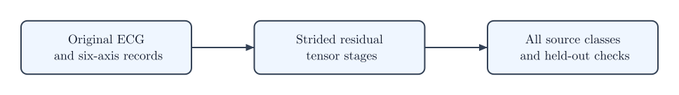
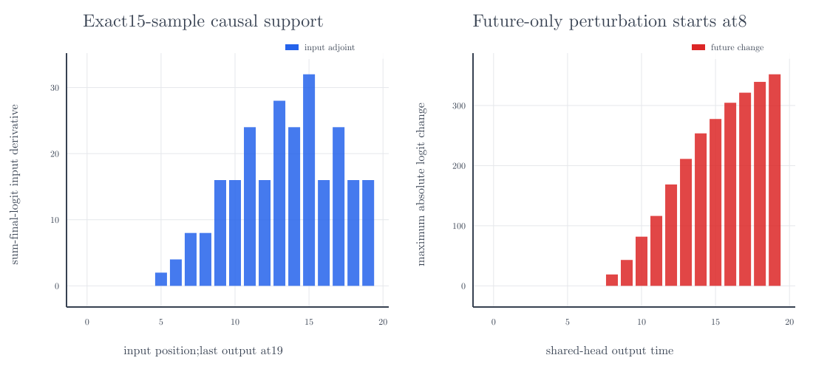
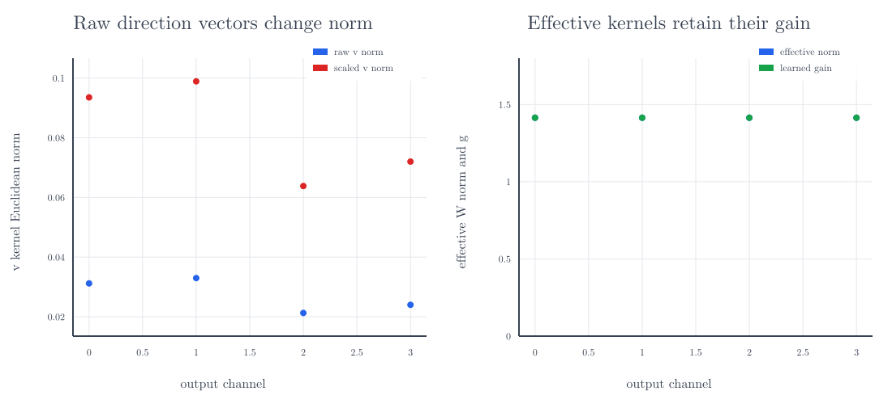
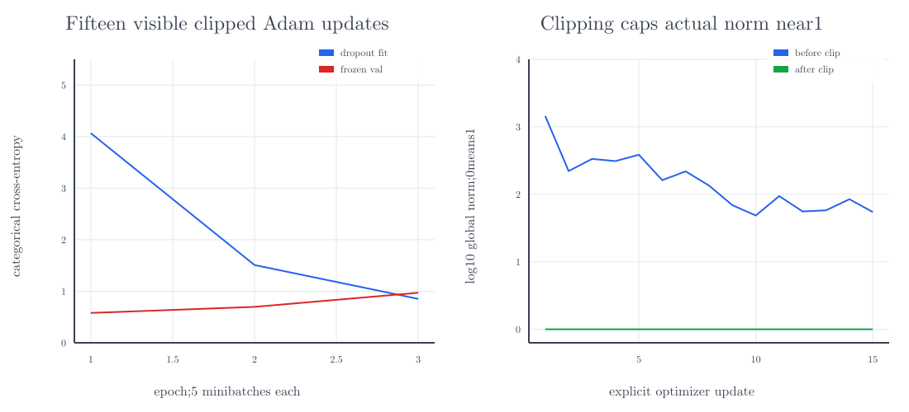
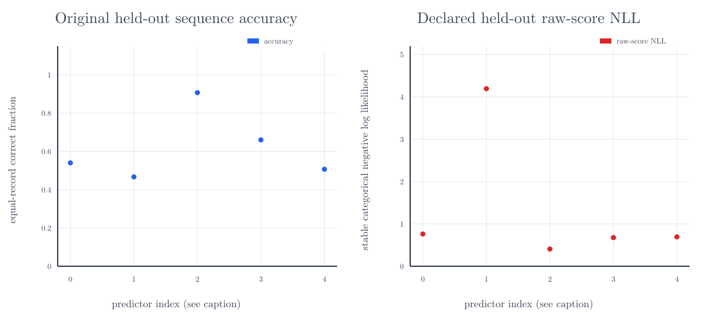
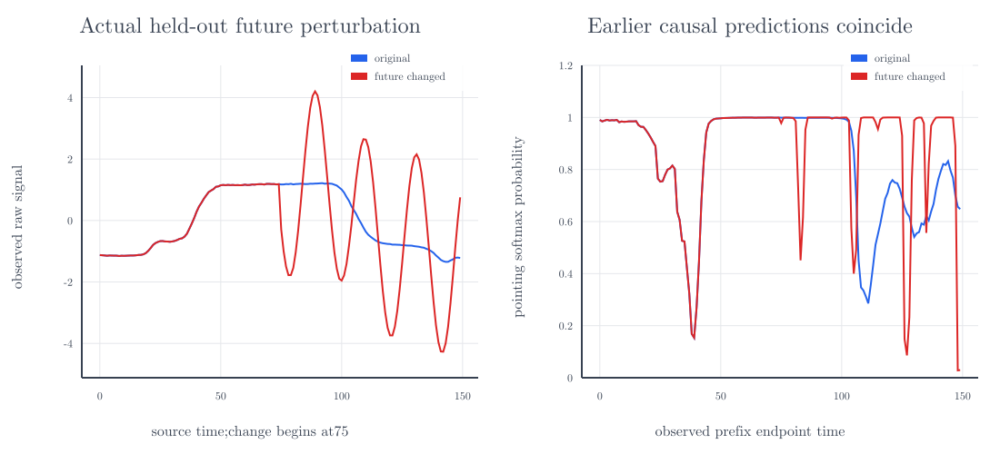
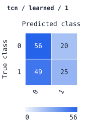

TCN:causal tensors,weight normalization and visible clipped Adam
Abstract
A complete six-level temporal convolutional network classifies original GunPoint sequences. Exact prefix Jacobians,weight-normalization probes,explicit SGD references and every clipped Adam update show the computation alongside honest held-out failures.
Source example: examples/cpp/source/nn/1_convolutional_neural_networks/1.9_1d_convolutions/tcn.cpp.
The method
Use two left-padded weight-normalized convolutions per residual level,dilations1..32,ReLU and explicit-generator dropout. A shared per-time binary head selects the last observed time. Save fitting-only normalization,train with explicit tensor global-norm clipping,and test causal prefixes plus all held-out source records without recomputing statistics.
The concept diagram below is drawn by dm::graphics::Diagram. Its editable C++
source is the complete block below; regeneration uses the same datamunge toolchain
as the numerical examples. Exports consume the saved local SVG.
#include <dm/dm.hpp>
int main() {
std::filesystem::create_directories("build");
dm::graphics::Diagram diagram;
diagram.node("n0", {0.0, 0}, "Original observed\n motion sequence");
diagram.node("n1", {5.2, 0}, "Dilated causal\n residual blocks");
diagram.node("n2", {10.4, 0}, "Prefix logits\n and held-out checks");
diagram.edge("n0", "n1").edge("n1", "n2");
diagram.save_svg("build/tcn_concept.svg");
}
Executed tensor architecture
This figure executes the inference configuration shown in the code, using a zero-valued shape probe without fitting or loading a checkpoint. Named stage boundaries group whole subgraphs where available; other nodes retain functional-layer detail. Exact batch-inclusive shapes and reachable parameter totals come from the trace. Shared linear scales map spatial dimensions and channel counts to blocks; the one-pixel visibility floor is disclosed in the legend. Labels use compact monospace text, rotate counterclockwise and sit beside their own glyphs. Arrows flow left to right; wide diagrams scroll at native size on the website.
#include <dm/dm.hpp>
int main() {
namespace n = dm::nn;
namespace m = n::models;
n::set_num_threads(2);
std::filesystem::create_directories("build");
n::ParameterStore p(17), state(18);
const m::TcnConfig config{8, 6, 3, 0, 1};
n::Module architecture_model(
[&](const n::Tensor& image) {
const auto out = m::Tcn(p, state, image, config);
auto previous = image;
for (std::size_t i = 0; i < out.blocks.size(); ++i) {
n::model_stage("Stage " + std::to_string(i + 1), previous, out.blocks[i]);
previous = out.blocks[i];
}
return out.logits;
},
"TCN:causal tensors,weight normalization and visible clipped Adam");
n::ModelPlotOptions options;
options.style = n::ModelPlotStyle::Flow;
options.detail = n::ModelPlotDetail::Blocks;
options.labels = {.type = n::ModelPlotLabel::NameAndShape, .size = 12, .wrap = 24};
options.spacing = {.layer = 24, .lane = 12, .label = 8, .margin = 20};
options.sizing.spatial_size = 96;
options.sizing.channel_size = 42;
options.sizing.minimum_extent = 1;
options.opacity = .8;
const auto diagram = architecture_model.plot(n::zeros({1, 150, 1}), options);
diagram.save_svg("build/tcn_architecture.svg");
std::print(
"{} displayed nodes; {} reachable learned values.\n",
diagram.nodes().size(),
diagram.parameter_count());
}13 displayed nodes; 2362 reachable learned values.

Original GunPoint observations and saved fitting statistics
Use genuine150-sample hand x-coordinate sequences from the pinned official GunPoint archive. Original class1gun-draw/class2pointing become0/1. All150 official test records stay unchanged. Seed407 holds20% per class out of the 50 original training records,giving40fit/10validation. Source records are disjoint;the original two actors remain shared dependencies. This is not actor-disjoint or a tuned benchmark evaluation.
The435,433-byte archive SHA256 and exact original source IDs/raw strings are retained by dm::datasets::prepare_example_data("signals"). Numeric input ingress becomes Float32 tensors. Fitting-only Double population mean/std round to Float32 and are saved as detached scalar state. Inference prefixes never estimate new normalization. The released signals already have archive preprocessing;network causality does not establish an online raw-sensor pipeline whose source preprocessing never saw future samples.
#include <dm/dm.hpp>
int main() {
const std::filesystem::path cache = dm::datasets::data_home();
dm::datasets::prepare_example_data("signals", cache);
}#include <dm/dm.hpp>
int main() {
namespace n = dm::nn;
namespace m = n::models;
n::set_num_threads(2);
std::filesystem::path cache;
if (const auto *p = std::getenv("DATAMUNGE_DATA_DIR"))
cache = p;
else if (const auto *p = std::getenv("XDG_CACHE_HOME"))
cache = std::filesystem::path(p) / "datamunge/datasets";
else
cache = std::filesystem::path(std::getenv("HOME")) / ".cache/datamunge/datasets";
std::filesystem::path root = cache / "time_series";
if (const auto *p = std::getenv("DATAMUNGE_SERIES_DIR"))
root = p;
else {
dm::datasets::prepare_example_data("signals", cache.string());
root = cache / "time_series";
}
const auto split = m::LoadSeries(root);
const auto &fit = split.pools[0];
const auto &validation = split.pools[1];
const auto &test = split.pools[2];
std::print("| split | original records | gun-draw | pointing |\n|---|---:|---:|---:|\n");
for (const auto &item : std::vector<std::pair<std::string, m::SeriesData>>{
{"fitting", fit}, {"validation", validation}, {"test", test}}) {
const auto counts = n::sum(n::one_hot(item.second.labels, 2), {0}).to_vector<int>();
std::print("| {} | {} | {} | {} |\n", item.first, item.second.size(), counts[0],
counts[1]);
}
std::print("Fitting-only population mean {:.9f},std {:.9f};no per-test normalization.\n",
split.config.mean, split.config.standard_deviation);
auto a = dm::graphics::RPlot::create();
const auto labels = fit.labels.to_vector<int>();
int shown[2] = {0, 0};
const auto time = n::arange(0, 150).to_vector<double>();
for (int row = 0; row < fit.size(); ++row) {
const int c = labels[row];
if (shown[c] >= 2)
continue;
const auto values = n::select(fit.signals, 0, row).reshape({150});
a.lines(time, values.to_vector<double>(),
std::string(c ? "point " : "gun ") + std::to_string(++shown[c]),
c ? dm::graphics::RGB{220, 38, 38} : dm::graphics::RGB{37, 99, 235});
}
a.title("Four genuine fitting hand motions")
.x_label("source sample index")
.y_label("original released x-coordinate");
const auto all =
n::concat({fit.signals, validation.signals, test.signals}, 0).reshape({200, 150});
auto b = n::plot_tensor_map(n::reverse(all, {0}), n::min(all).item(), n::max(all).item());
b.title("All200 original source sequences")
.x_label("source sample index")
.y_label("40fit /10validation /150test rows");
auto layout = dm::graphics::RLayout::create(1, 2);
layout.add(a).add(b).size(1100, 500).fit_panels().save_svg("build/tcn_data.svg");
}| split | original records | gun-draw | pointing |
|---|---|---|---|
| fitting | 40 | 19 | 21 |
| validation | 10 | 5 | 5 |
| test | 150 | 76 | 74 |
Fitting-only population mean -0.000000000,std 0.996661067;no per-test normalization.

Left-only padding gives an exact causal Jacobian
Each residual level has two weight-normalized convolutions at dilation2^level, each followed by ReLU and optional dropout. Explicit left padding equals (kernel-1)*dilation;VALID convolution preserves the observed time axis. Add an identity or1x1 projected skip,then ReLU. A shared linear head predicts at every time and classification selects the last observed output.
The exact graph receptive field is1+2*(kernel-1)*(2^levels-1):six levels, kernel3 give253 samples. A controlled positive two-tap/three-level fixture has field15. Its final time19 has zero derivative for times0..4 and nonzero derivatives for5..19. Perturbing inputs only from time8 leaves all earlier outputs exactly unchanged. These are declared connectivity fixtures,not learned motion explanations.
#include <dm/dm.hpp>
int main() {
namespace n = dm::nn;
namespace m = n::models;
n::set_num_threads(2);
n::ParameterStore p(461), state(463);
m::TcnConfig c{1, 3, 2, 0, 1};
{
n::NoGradGuard guard;
m::Tcn(p, state, n::ones({1, 20, 1}), c);
for (const auto &name : p.names()) {
const auto value = p.at(name);
p.set(name, n::full(value.shape(),
name.ends_with("/b") ? 0.
: name.ends_with("/g") ? double(std::sqrt(2.f))
: 1.,
value.dtype()));
}
}
const auto raw = n::full({1, 20, 1}, 2.).requires_grad_();
const auto out = m::Tcn(p, state, raw, c);
const auto g = n::grad(n::sum(n::select(out.sequence, 1, 19)), {raw})[0].reshape({20});
n::NoGradGuard guard;
const auto time = n::arange(0, 20).reshape({1, 20, 1});
const auto changed = raw + n::where(n::greater_equal(time, 8.), 3. + n::sin(time * .7), 0.);
const auto alternate = m::Tcn(p, state, changed, c);
const auto difference = n::max(n::abs(alternate.sequence - out.sequence), {0, 2});
std::print("Controlled exact RF{};outside-support derivative max {:.3g};future perturbation "
"before8 output error {:.3g};later change {:.6f}.\n",
m::TcnReceptiveField(c), n::max(n::abs(n::slice_axis(g, 0, 0, 5))).item(),
n::max(n::slice_axis(difference, 0, 0, 8)).item(),
n::max(n::slice_axis(difference, 0, 8, 20)).item());
auto a = dm::graphics::RPlot::create(), b = dm::graphics::RPlot::create();
const auto positions = time.reshape({20}).to_vector<double>();
a.bars(positions, g.to_vector<double>(), "input adjoint", {37, 99, 235})
.title("Exact15-sample causal support")
.x_label("input position;last output at19")
.y_label("sum-final-logit input derivative");
b.bars(positions, difference.to_vector<double>(), "future change", {220, 38, 38})
.title("Future-only perturbation starts at8")
.x_label("shared-head output time")
.y_label("maximum absolute logit change");
auto layout = dm::graphics::RLayout::create(1, 2);
layout.add(a).add(b).size(1100, 500).fit_panels().save_svg("build/tcn_causality.svg");
}Controlled exact RF15;outside-support derivative max 0;future perturbation before8 output error 0;later change 351.929138.

Weight normalization separates direction and gain
Each convolution stores v,g,b. The effective kernel per output channel is W=g*v/sqrt(sum(v*v)+1e-12). v initializes N(0,.01),g=sqrt(2.f),b0. Scaling v changes its raw norm while leaving the effective direction/gain approximately invariant;the epsilon and Float32 rounding prevent an exact mathematical scale-invariance claim. Both v and g remain learned leaves. The report explicitly computes their gradients and the actual forward change under a declared v-scale intervention. No optimization hides inside the layer.
#include <dm/dm.hpp>
int main() {
namespace n = dm::nn;
namespace m = n::models;
n::set_num_threads(2);
n::ParameterStore p(461);
const auto input = (.5 + .2 * n::sin(n::arange(0, 2 * 20 * 2) * .13)).reshape({2, 20, 2});
const auto y = m::TcnCausalConv(p, "probe", input, 4, 3, 2);
const auto gradients = n::grad(n::sum(n::square(y)), p.parameters());
const auto v = p.at("probe/v").clone();
const auto g = p.at("probe/g");
const auto raw = n::sqrt(n::sum(n::square(v), {0, 1, 2}));
const auto weight = v * g / n::sqrt(n::sum(n::square(v), {0, 1, 2}) + 1e-12);
const auto effective = n::sqrt(n::sum(n::square(weight), {0, 1, 2}));
n::NoGradGuard guard;
p.set("probe/v", v * 3.);
const auto scaled = m::TcnCausalConv(p, "probe", input, 4, 3, 2);
std::print("All v/g/b adjoint norms {:.6f}/{:.6f}/{:.6f};v*=3 forward max change {:.9g} "
"including epsilon/Float32 rounding.\n",
n::sqrt(n::sum(n::square(gradients[0]))).item(),
n::sqrt(n::sum(n::square(gradients[1]))).item(),
n::sqrt(n::sum(n::square(gradients[2]))).item(),
n::max(n::abs(scaled - y)).item());
auto a = dm::graphics::RPlot::create(), b = dm::graphics::RPlot::create();
const auto channels = n::arange(0, 4).to_vector<double>();
a.points(channels, raw.to_vector<double>(), "raw v norm", {37, 99, 235})
.points(channels, (raw * 3.).to_vector<double>(), "scaled v norm", {220, 38, 38})
.title("Raw direction vectors change norm")
.x_label("output channel")
.y_label("v kernel Euclidean norm");
b.points(channels, effective.to_vector<double>(), "effective norm", {37, 99, 235})
.points(channels, g.to_vector<double>(), "learned gain", {22, 163, 74})
.title("Effective kernels retain their gain")
.x_label("output channel")
.y_label("effective W norm and g")
.y_limits(0, 1.8);
auto layout = dm::graphics::RLayout::create(1, 2);
layout.add(a).add(b).size(1100, 500).fit_panels().save_svg(
"build/tcn_weight_normalization.svg");
}All v/g/b adjoint norms 6030.414062/56.663742/92.512138;v*=3 forward max change 1.1920929e-07 including epsilon/Float32 rounding.

Both widths retain all six residual levels
Full width64 has137,154 learned scalars;compact width8 has2,362. Both retain 40 learned leaves,6residual levels,dilations1/2/4/8/16/32,two convolutions per level and the complete253-sample receptive field. Separate state contains only fitting mean/std;there is no BN. Dropout keep.8 applies after each convolution's ReLU during training,using an explicit generator. Inference ignores dropout and supports any positive observed prefix length.
#include <dm/dm.hpp>
int main() {
namespace n = dm::nn;
namespace m = n::models;
n::set_num_threads(2);
n::NoGradGuard guard;
std::print("| width | learned values | leaves | scalar state | RF | every block shape | "
"sequence | endpoint |\n|---:|---:|---:|---:|---:|---|---|---|\n");
for (int width : {64, 8}) {
n::ParameterStore p(461), state(463);
m::TcnConfig c{width, 6, 3, 0, 1};
const auto out = m::Tcn(p, state, n::ones({2, 150, 1}), c);
std::print("| {} | {} | {} | {} | {} | six times {} | {} | {} |\n", width, p.count(),
p.size(), state.size(), m::TcnReceptiveField(c), out.blocks[0].shape(),
out.sequence.shape(), out.logits.shape());
}
}| width | learned values | leaves | scalar state | RF | every block shape | sequence | endpoint |
|---|---|---|---|---|---|---|---|
| 64 | 137154 | 40 | 2 | 253 | six times [2, 150, 64] | [2, 150, 2] | [2, 2] |
| 8 | 2362 | 40 | 2 | 253 | six times [2, 150, 8] | [2, 150, 2] | [2, 2] |
Keep the reference fit explicit
Repeat the fitting-only300-value centroid optimization with one visible Double SGD(.5) step on class-balanced per-coordinate MSE. The closed-form source branch only checks the resulting held-out distance logits. The raw1NN reference retains original fitting signals,has no optimized leaves and uses first-row tie resolution. Both references use exactly the same raw records and labels as the TCN;their raw distance/onehot scores are pseudo-logits.
#include <dm/dm.hpp>
int main() {
namespace n = dm::nn;
namespace m = n::models;
n::set_num_threads(2);
std::filesystem::path cache;
if (const auto *p = std::getenv("DATAMUNGE_DATA_DIR"))
cache = p;
else if (const auto *p = std::getenv("XDG_CACHE_HOME"))
cache = std::filesystem::path(p) / "datamunge/datasets";
else
cache = std::filesystem::path(std::getenv("HOME")) / ".cache/datamunge/datasets";
std::filesystem::path root = cache / "time_series";
if (const auto *p = std::getenv("DATAMUNGE_SERIES_DIR"))
root = p;
else {
dm::datasets::prepare_example_data("signals", cache.string());
root = cache / "time_series";
}
const auto split = m::LoadSeries(root);
const auto &fit = split.pools[0];
const auto &validation = split.pools[1];
const auto &test = split.pools[2];
const auto weights =
n::one_hot(fit.labels, 2, 1., 0., n::DType::Float64).reshape({fit.size(), 2, 1, 1});
const auto count = n::sum(weights, {0});
const auto target = n::expand_dims(fit.signals.to(n::DType::Float64), 1);
n::ParameterStore prior(431, n::DType::Float64);
const auto centers = prior.get("centroids", {2, 150, 1}, n::init::zeros());
n::OptimizerConfig options;
options.kind = n::OptimizerKind::Sgd;
n::Optimizer sgd(prior, .5, options);
const auto loss = n::sum(n::sum(weights * n::square(centers - target), {0}) / count);
sgd.minimize(loss);
const auto logits =
(-n::mean(n::square(n::expand_dims(test.signals.to(n::DType::Float64), 1) -
n::expand_dims(centers, 0)),
{2, 3}))
.to(n::DType::Float32);
const auto parity = n::max(n::abs(logits - m::SeriesReference(fit, test, true)));
if (parity.item() != 0)
return 1;
std::filesystem::create_directories("build");
n::save_npz("build/tcn_sgd_centroids.npz", {{"centers", centers.detach()}});
std::print("One explicit SGD(.5) update,{} centroid values;every held-out source-oracle "
"logit parity {:.3g}.\n",
prior.count(), parity.item());
auto a = dm::graphics::RPlot::create(), b = dm::graphics::RPlot::create();
const auto time = n::arange(0, 150).to_vector<double>();
a.lines(time, n::select(centers, 0, 0).reshape({150}).to_vector<double>(), "gun centroid",
{37, 99, 235})
.lines(time, n::select(centers, 0, 1).reshape({150}).to_vector<double>(),
"point centroid", {220, 38, 38})
.title("Explicitly SGD-fitted raw centroids")
.x_label("source sample index")
.y_label("class-balanced raw mean");
const auto difference =
(fit.signals - n::slice_axis(test.signals, 0, 0, 1)).to(n::DType::Float64);
const auto distances = n::sum(n::square(difference), {1, 2});
const auto closest = n::argmin(distances).item<std::int64_t>();
b.points(n::arange(0, fit.size()).to_vector<double>(), distances.to_vector<double>(),
"raw distances", {37, 99, 235})
.points({double(closest)}, {n::select(distances, 0, closest).item()}, "first nearest",
{220, 38, 38})
.title("First test signal versus fitting rows")
.x_label("retained fitting row")
.y_label("sum of raw squared differences");
auto layout = dm::graphics::RLayout::create(1, 2);
layout.add(a).add(b).size(1100, 500).fit_panels().save_svg("build/tcn_references.svg");
}One explicit SGD(.5) update,300 centroid values;every held-out source-oracle logit parity 0.

Clip tensor gradients and show all15 Adam updates
Warm all40 learned and2 normalization leaves before Adam(.001). Keep.8 training dropout uses generator457;initial learned/state stores use461/463. One visible full-fitting dropout derivative probe checks every leaf before training and advances that same generator,matching the source workflow. Batch order seed467 uses all40 fitting records,batch8,three epochs.
For each update,reduce squared gradient norms with tensors,then apply the source Float32 scale min(1,1/(sqrt(sum_squared)+1e-6)). Scale all gradient tensors before Adam. The plot shows log10 of actual unclipped and scaled norms;0 means norm1. Validation uses dropout-free inference and selects the paired learned and normalization checkpoint. No gradient clip,BN,normalization estimation or optimizer hides inside forward. Compare all held-out rows with the unchanged SGD centroid and parameter-free raw1NN references.
#include <dm/dm.hpp>
int main() {
namespace n = dm::nn;
namespace m = n::models;
n::set_num_threads(2);
std::filesystem::path cache;
if (const auto *p = std::getenv("DATAMUNGE_DATA_DIR"))
cache = p;
else if (const auto *p = std::getenv("XDG_CACHE_HOME"))
cache = std::filesystem::path(p) / "datamunge/datasets";
else
cache = std::filesystem::path(std::getenv("HOME")) / ".cache/datamunge/datasets";
std::filesystem::path root = cache / "time_series";
if (const auto *p = std::getenv("DATAMUNGE_SERIES_DIR"))
root = p;
else {
dm::datasets::prepare_example_data("signals", cache.string());
root = cache / "time_series";
}
const auto split = m::LoadSeries(root);
const auto &fit = split.pools[0];
const auto &validation = split.pools[1];
const auto &test = split.pools[2];
m::TcnConfig config{8, 6, 3, split.config.mean, split.config.standard_deviation};
n::ParameterStore p(461), state(463);
n::Generator dropout(457);
{
n::NoGradGuard guard;
m::Tcn(p, state, n::zeros({1, 4, 1}), config);
}
auto infer = [&](n::ParameterStore &learned, n::ParameterStore &frozen,
const n::Tensor &raw) {
n::NoGradGuard guard;
return m::Tcn(learned, frozen, raw, config);
};
const auto initial =
m::ScoreSequenceClassifier(infer(p, state, fit.signals).logits, fit.labels);
const auto untrained = infer(p, state, test.signals).logits;
const auto probe = m::Tcn(p, state, fit.signals, config, true, .8, &dropout);
const auto probe_gradients =
n::grad(m::SequenceCrossEntropy(probe.logits, fit.labels), p.parameters());
for (const auto &g : probe_gradients)
if (!n::all(n::is_finite(g)).item<bool>() || n::sum(n::square(g)).item() <= 0)
return 1;
std::print("Visible dropout derivative probe:all{} learned leaves finite/nonzero before "
"optimizer updates.\n",
probe_gradients.size());
n::OptimizerConfig options;
options.kind = n::OptimizerKind::Adam;
n::Optimizer adam(p, .001, options);
n::BatchOrder order(fit.size(), 8, 467);
std::vector<n::Tensor> history, clip_history;
double best = INFINITY;
int selected = 0, updates = 0;
std::print("| epoch | dropout fitting CE | validation NLL |\n|---:|---:|---:|\n");
for (int epoch = 1; epoch <= 3; ++epoch) {
order.begin_epoch();
auto average = n::zeros({}, n::DType::Float64);
for (;;) {
const auto rows = order.next();
if (rows.empty())
break;
const auto batch = m::SeriesRows(fit, rows);
const auto out = m::Tcn(p, state, batch.signals, config, true, .8, &dropout);
const auto loss = m::SequenceCrossEntropy(out.logits, batch.labels);
auto gradients = n::grad(loss, p.parameters());
std::vector<n::Tensor> terms;
for (const auto &g : gradients)
terms.push_back(n::sum(n::square(g)).to(n::DType::Float64));
const auto norm = n::sqrt(n::sum(n::stack(terms, 0))).to(n::DType::Float32);
const auto scale = n::minimum(n::ones({}), 1. / (norm + 1e-6));
for (auto &g : gradients)
g = g * scale;
adam.step(gradients);
clip_history.push_back(
n::stack({norm.detach(), (norm * scale).detach(), scale.detach()}, 0));
average = average +
loss.detach().to(n::DType::Float64) * double(rows.size()) / double(fit.size());
++updates;
}
const auto val = m::ScoreSequenceClassifier(infer(p, state, validation.signals).logits,
validation.labels)
.nll;
if (val.item() < best) {
best = val.item();
selected = epoch;
n::NamedTensors arrays;
for (std::size_t i = 0; i < p.size(); ++i)
arrays.push_back({"p/" + p.names()[i], p.parameters()[i]});
for (std::size_t i = 0; i < state.size(); ++i)
arrays.push_back({"s/" + state.names()[i], state.parameters()[i]});
n::save_npz("build/tcn_best.npz", arrays);
}
history.push_back(n::stack({average, val}, 0));
std::print("| {} | {:.6f} | {:.6f} |\n", epoch, average.item(), val.item());
}
n::ParameterStore deployed(461), frozen(463);
{
n::NoGradGuard guard;
m::Tcn(deployed, frozen, n::zeros({1, 4, 1}), m::TcnConfig{8, 6, 3, 0, 1});
}
const auto saved = n::load_npz("build/tcn_best.npz");
if (saved.size() != p.size() + state.size())
return 1;
for (const auto &[name, value] : saved) {
if (name.starts_with("p/")) {
p.set(name.substr(2), value);
deployed.set(name.substr(2), value.clone());
} else if (name.starts_with("s/")) {
state.set(name.substr(2), value);
frozen.set(name.substr(2), value.clone());
} else
return 1;
}
std::vector<n::Tensor> before;
for (const auto *store : {&deployed, &frozen})
for (const auto &v : store->parameters())
before.push_back(v.clone());
const auto out = infer(deployed, frozen, test.signals);
const auto logits = out.logits;
const auto reference = infer(p, state, test.signals);
const auto repeat = infer(deployed, frozen, test.signals);
const auto parity = n::maximum(n::max(n::abs(logits - reference.logits)),
n::max(n::abs(logits - repeat.logits)));
auto prefix_error = n::zeros({});
for (int length : {1, 17, 75, 150}) {
const auto prefix = m::TcnPrefix(test, length);
prefix_error =
n::maximum(prefix_error, n::max(n::abs(infer(deployed, frozen, prefix.signals).logits -
n::select(out.sequence, 1, length - 1))));
}
const auto raw = n::slice_axis(test.signals, 0, 0, 1);
const auto single = infer(deployed, frozen, raw);
const auto batch_error = n::max(n::abs(single.logits - n::slice_axis(logits, 0, 0, 1)));
const auto time = n::arange(0, 150, 1, n::DType::Float64).reshape({1, 150, 1});
const auto changed =
raw +
n::where(n::greater_equal(time, 75.), 3. * n::sin(time * .3), 0.).to(n::DType::Float32);
const auto altered = infer(deployed, frozen, changed);
const auto difference = n::abs(altered.sequence - single.sequence);
const auto earlier = n::max(n::slice_axis(difference, 1, 0, 75));
const auto later = n::sum(n::slice_axis(difference.to(n::DType::Float64), 1, 75, 150));
bool immutable = true;
std::size_t index = 0;
for (const auto *store : {&deployed, &frozen})
for (const auto &v : store->parameters())
immutable = immutable && n::all(n::equal(before[index++], v)).item<bool>();
if (parity.item() > 1e-5 || prefix_error.item() > 1e-5 || batch_error.item() > 1e-5 ||
earlier.item() != 0 || later.item() <= 1e-5 || !immutable)
return 1;
const auto fitted =
m::ScoreSequenceClassifier(infer(deployed, frozen, fit.signals).logits, fit.labels);
const auto clips = n::stack(clip_history, 0);
std::print("{} visible Adam updates,{} clipped;selected epoch {},validation {:.6f};fixed "
"fitting CE {:.6f}->{:.6f}.\nRestored/repeat parity {:.3g},all150-row prefixes "
"max {:.9g},single/batch {:.9g} within1e-5;{} learned/state leaves "
"unchanged:{}.\nFuture-only observed perturbation:prefix max {:.3g},later "
"absolute change {:.6f}.\n",
updates,
n::sum(n::less(n::select(clips, 1, 2), 1.).to(n::DType::Int32)).item<int>(),
selected, best, initial.nll.item(), fitted.nll.item(), parity.item(),
prefix_error.item(), batch_error.item(), before.size(), immutable, earlier.item(),
later.item());
const auto centers = n::load_npz("build/tcn_sgd_centroids.npz")[0].second;
const auto centroid =
(-n::mean(n::square(n::expand_dims(test.signals.to(n::DType::Float64), 1) -
n::expand_dims(centers, 0)),
{2, 3}))
.to(n::DType::Float32);
const auto nearest = m::SeriesReference(fit, test, false);
std::vector<n::Tensor> metrics, confusions;
std::print(
"| predictor | accuracy | raw-score NLL | true-row confusion |\n|---|---:|---:|---|\n");
{
n::ConfusionMatrix current_counts(logits.size(1));
current_counts.add(test.labels, n::argmax(logits, 1));
n::save_npz("build/tcn_heldout_"+std::string("0")+".npz",{{"truth",test.labels},{"logits",logits},{"counts",current_counts.to_tensor()}});
}
for (const auto &item :
std::vector<std::pair<std::string, n::Tensor>>{{"learned", logits},
{"untrained", untrained},
{"raw1NN", nearest},
{"SGD centroid", centroid},
{"class0 tie", n::zeros_like(logits)}}) {
const auto score = m::ScoreSequenceClassifier(item.second, test.labels);
metrics.push_back(n::stack({score.accuracy, score.nll}, 0));
confusions.push_back(score.confusion);
std::print("| {} | {:.6f} | {:.6f} | {} |\n", item.first, score.accuracy.item(),
score.nll.item(), score.confusion);
}
auto a = dm::graphics::RPlot::create(), b = dm::graphics::RPlot::create();
const auto measured = n::stack(metrics, 0);
const auto positions = n::arange(0, 5).to_vector<double>();
a.points(positions, n::select(measured, 1, 0).to_vector<double>(), "accuracy", {37, 99, 235})
.title("Original held-out sequence accuracy")
.x_label("predictor index (see caption)")
.y_label("equal-record correct fraction")
.y_limits(0, 1.15);
b.points(positions, n::select(measured, 1, 1).to_vector<double>(), "raw-score NLL",
{220, 38, 38})
.title("Declared held-out raw-score NLL")
.x_label("predictor index (see caption)")
.y_label("stable categorical negative log likelihood")
.y_limits(0, 5.2);
auto scores = dm::graphics::RLayout::create(1, 2);
scores.add(a).add(b).size(1100, 500).fit_panels().save_svg("build/tcn_metrics.svg");
std::filesystem::create_directories("figures");
std::filesystem::copy_file("build/tcn_metrics.svg", "figures/tcn_metrics.svg",
std::filesystem::copy_options::overwrite_existing);
a = n::plot_tensor_map(n::reverse(confusions[0].to(n::DType::Float64), {0}), 0, 80);
b = n::plot_tensor_map(n::reverse(confusions[3].to(n::DType::Float64), {0}), 0, 80);
a.title("Learned TCN held-out confusion")
.x_label("predicted0gun /1point")
.y_label("true0gun at bottom /1point");
b.title("SGD centroid held-out confusion")
.x_label("predicted0gun /1point")
.y_label("true0gun at bottom /1point");
auto cm = dm::graphics::RLayout::create(1, 2);
cm.add(a).add(b).size(1100, 500).fit_panels().save_svg("build/tcn_confusion.svg");
std::filesystem::copy_file("build/tcn_confusion.svg", "figures/tcn_confusion.svg",
std::filesystem::copy_options::overwrite_existing);
a = dm::graphics::RPlot::create();
b = dm::graphics::RPlot::create();
const auto xs = time.reshape({150}).to_vector<double>();
a.lines(xs, raw.reshape({150}).to_vector<double>(), "original", {37, 99, 235})
.lines(xs, changed.reshape({150}).to_vector<double>(), "future changed", {220, 38, 38})
.title("Actual held-out future perturbation")
.x_label("source time;change begins at75")
.y_label("observed raw signal");
b.lines(xs,
n::select(n::select(n::softmax(single.sequence, 2), 0, 0), 1, 1).to_vector<double>(),
"original", {37, 99, 235})
.lines(xs,
n::select(n::select(n::softmax(altered.sequence, 2), 0, 0), 1, 1)
.to_vector<double>(),
"future changed", {220, 38, 38})
.title("Earlier causal predictions coincide")
.x_label("observed prefix endpoint time")
.y_label("pointing softmax probability")
.y_limits(0, 1.2);
auto control = dm::graphics::RLayout::create(1, 2);
control.add(a).add(b).size(1100, 500).fit_panels().save_svg("build/tcn_future.svg");
std::filesystem::copy_file("build/tcn_future.svg", "figures/tcn_future.svg",
std::filesystem::copy_options::overwrite_existing);
const auto hist = n::stack(history, 0);
const auto epochs = n::arange(1, 4).to_vector<double>();
a = dm::graphics::RPlot::create();
b = dm::graphics::RPlot::create();
a.lines(epochs, n::select(hist, 1, 0).to_vector<double>(), "dropout fit", {37, 99, 235})
.lines(epochs, n::select(hist, 1, 1).to_vector<double>(), "frozen val", {220, 38, 38})
.title("Fifteen visible clipped Adam updates")
.x_label("epoch;5 minibatches each")
.y_label("categorical cross-entropy")
.y_limits(0, 5.5);
const auto steps = n::arange(1, updates + 1).to_vector<double>();
b.lines(steps, (n::log(n::select(clips, 1, 0)) / std::log(10.)).to_vector<double>(),
"before clip", {37, 99, 235})
.lines(steps, (n::log(n::select(clips, 1, 1)) / std::log(10.)).to_vector<double>(),
"after clip", {22, 163, 74})
.title("Clipping caps actual norm near1")
.x_label("explicit optimizer update")
.y_label("log10 global norm;0means1")
.y_limits(-.2, 4.);
auto training = dm::graphics::RLayout::create(1, 2);
training.add(a).add(b).size(1100, 500).fit_panels().save_svg("build/tcn_training.svg");
}Visible dropout derivative probe:all40 learned leaves finite/nonzero before optimizer updates.
| epoch | dropout fitting CE | validation NLL |
|---|---|---|
| 1 | 4.067642 | 0.579120 |
| 2 | 1.508437 | 0.697090 |
| 3 | 0.851502 | 0.971131 |
15 visible Adam updates,15 clipped;selected epoch 1,validation 0.579120;fixed fitting CE 4.985522->0.878905. Restored/repeat parity 0,all150-row prefixes max 0,single/batch 0 within1e-5;42 learned/state leaves unchanged:true. Future-only observed perturbation:prefix max 0,later absolute change 475.970717.
| predictor | accuracy | raw-score NLL | true-row confusion |
|---|---|---|---|
| learned | 0.540000 | 0.761294 | int64[2, 2] [[56, 20], [49, 25]] |
| untrained | 0.466667 | 4.193172 | int64[2, 2] [[0, 76], [4, 70]] |
| raw1NN | 0.906667 | 0.406595 | int64[2, 2] [[67, 9], [5, 69]] |
| SGD centroid | 0.660000 | 0.676829 | int64[2, 2] [[45, 31], [20, 54]] |
| class0 tie | 0.506667 | 0.693147 | int64[2, 2] [[76, 0], [74, 0]] |




Selected epoch3 reduces fixed fitting CE4.985522 to.670643,but held-out accuracy.426667 is below the untrained model.466667,the class0 tie.506667, SGD centroid.660000 and raw1NN.906667. Its NLL.714699 improves over untrained4.193172,while accuracy declines. The confusion11/65/21/53 exposes frequent gun-draw failures. This run verifies implementation,not useful classification or a TCN advantage. All15 gradient norms actually require clipping.
Independent verification and limits
Six native tests execute full topology and every learned gradient,independent weight-normalized causal equations and all20 tiny-coordinate finite differences, exact field15 Jacobian/all reachable lags/future-zero/prefix equivalence, actual held-out prefix gradients and future isolation,literal Float32 clipping parity and invalid dropout/overflow checks. Public examples compile/run; standalone header inclusion and the original three-epoch workflow pass. Shared original-data and categorical metric/centroid oracles remain verified.
The source GunPoint records have collection and preprocessing dependencies. A causal observed-input graph does not make them actor-disjoint or physically online raw sensors. Tiny fitting/validation pools and short dropout training limit accuracy conclusions;all actual held-out errors and baselines remain visible.
Annotated confusion counts
The following program replots the current held-out evaluation counts printed in the
predictor tables above. It reproduces those recorded measurements without refitting
or re-evaluating the model. ConfusionMatrix::from_counts owns the integer tensor
counts and save_svg labels every cell. True class zero is the *top* row and
predicted class zero the left column. Counts are exact; colors use the observed
count range. Source class meanings remain those declared for the dataset above.
#include <dm/dm.hpp>
int main() {
namespace n = dm::nn;
std::filesystem::create_directories("build");
{
n::Tensor counts;
for (const auto &[key, value] : n::load_npz("build/tcn_heldout_0.npz"))
if (key == "counts") counts = value;
const auto matrix = n::ConfusionMatrix::from_counts(counts);
matrix.save_svg(
"build/tcn_confusion_api_0.svg",
{.title = "tcn / learned / 1", .cell_size = 52, .font_size = 13});
std::print("Current evaluation 1: 150 observations; accuracy {:.6f}.\n", matrix.accuracy());
}
}Current evaluation 1: 150 observations; accuracy 0.540000.

Regenerate adjacent views from this run
#include <dm/dm.hpp>
int main(){std::filesystem::copy_file("build/tcn_confusion.svg","build/export_tcn_confusion.svg",std::filesystem::copy_options::overwrite_existing);}#include <dm/dm.hpp>
int main(){std::filesystem::copy_file("build/tcn_future.svg","build/export_tcn_future.svg",std::filesystem::copy_options::overwrite_existing);}#include <dm/dm.hpp>
int main(){std::filesystem::copy_file("build/tcn_metrics.svg","build/export_tcn_metrics.svg",std::filesystem::copy_options::overwrite_existing);}Conclusion
The report verifies causal connectivity and exposes every optimizer operation. Saved normalization and unchanged prefix predictions establish the declared observed-input contract;the actual held-out comparisons determine classification quality. Neither structural causality nor reduced fitting loss is an accuracy claim.
References
- [Bai,Kolter and Koltun(2018),An Empirical Evaluation of Generic Convolutional and Recurrent Networks for Sequence Modeling](https://arxiv.org/abs/1803.01271).
- [Salimans and Kingma(2016),Weight Normalization](https://arxiv.org/abs/1602.07868).
- [Official GunPoint observations](https://www.timeseriesclassification.com/description.php?Dataset=GunPoint).